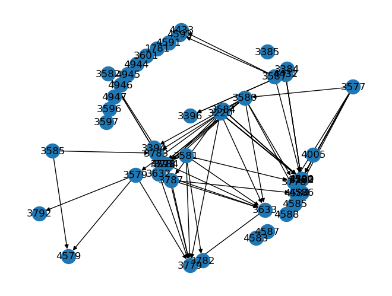
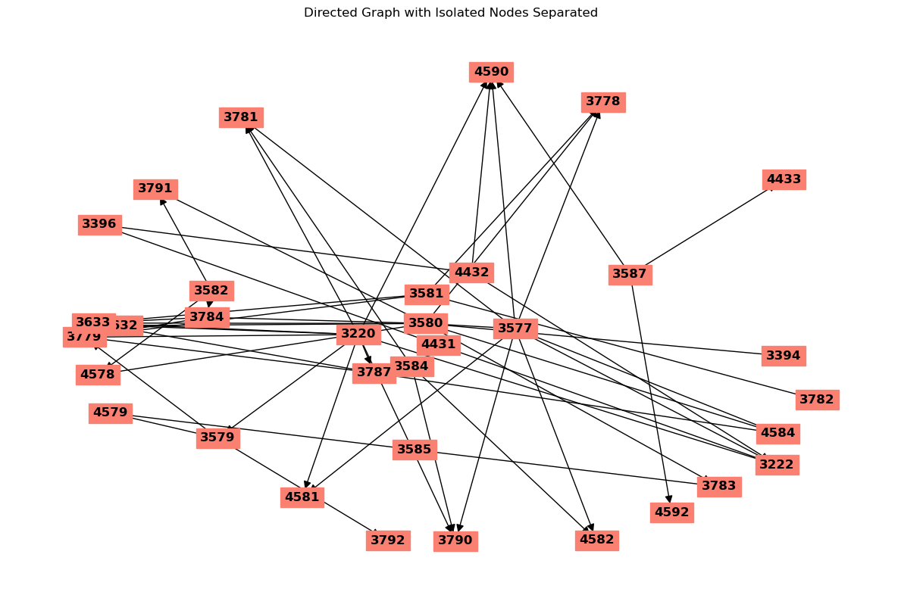

import pandas as pdimport reimport urllibimport lxmlfrom lxml import etreefrom unicodedata import normalizeimport matplotlib.pyplot as pltres = urllib.request.urlopen("https://studiegidswww.uhasselt.be/opleidingsonderdeel.aspx?a=2024&i=4579&n=4&t=04")html = res.read().decode()tree = etree.fromstring(html, etree.HTMLParser())'No sequentiality' in htmlFalsetree.xpath('//*[re:match(text(), "\\(\\d{4}\\)") and not(contains(name(),"option"))]/text()',
namespaces={"re": "http://exslt.org/regular-expressions"})['Spatial Epidemiology DL\xa0(4579)',
'\r\n Concepts of Epidemiology DL (3585)\r\n ',
'\r\n Introduction to Bayesian Inference DL (3579)\r\n ']def parse_course_page(course_no):
html = urllib.request.urlopen("https://studiegidswww.uhasselt.be/opleidingsonderdeel.aspx?a=2024&i=%s&n=4&t=04" % str(course_no))\
.read().decode()
tree = etree.fromstring(html, etree.HTMLParser())
course_matches = tree.xpath('//*[re:match(text(), "\\(\\d{4}\\)") and not(contains(name(),"option"))]/text()',
namespaces={"re": "http://exslt.org/regular-expressions"})
# if 'No sequentiality' in html:
# return c[0]
# else:
return normalize('NFKD', course_matches[0]), list(set([normalize("NFKD", c.strip()) for c in course_matches if c.startswith('\r\n ')]))
parse_course_page(3587)('Programming in Python DL (3587)', [])cs = open('course_nos.txt', 'r').read().splitlines()dep = [*map(parse_course_page, cs)]import networkx as nxcn = re.compile(r'\d{4}')g = nx.DiGraph()g.add_nodes_from([(int(cn.findall(x[0])[0]), dict(name=x[0])) for x in dep])g.nodes[4578]{'name': 'Modeling Infectious Diseases DL (4578)'}g.in_edges(3582)InEdgeDataView([])g.out_edges(3582)OutEdgeDataView([(3582, 3791), (3582, 3784), (3582, 4578)])for d in dep:
for pre in d[-1]:
if pre:
g.add_edge(int(cn.findall(pre)[0]), int(cn.findall(d[0])[0]))pos = nx.kamada_kawai_layout(g)
nx.draw_kamada_kawai(g)
_ = nx.draw_networkx_labels(g, pos,
#labels = {n:x[0] for n,x in zip(g.nodes,dep)}
)
g.nodes[3396]{'name': 'Computer Intensive Methods DL (3396)'}G = g
# Identify isolated nodes
isolated_nodes = list(nx.isolates(G))
connected_nodes = [n for n in G.nodes() if n not in isolated_nodes]
# Create a layout for the graph
pos = nx.spring_layout(G)
# Adjust positions to separate isolated nodes
for i, node in enumerate(isolated_nodes):
pos[node] = (pos[node][0] + 3 + i, pos[node][1] + 1) # Move isolated nodes to the right and slightly up
# Draw the graph
plt.figure(figsize=(12, 8))
#nx.draw_networkx_nodes(G, pos, nodelist=connected_nodes, node_color='C0', node_size=500)
#nx.draw_networkx_nodes(G, pos, nodelist=isolated_nodes, node_color='red', node_size=500)
nx.draw_networkx_labels(G, pos, font_size=12, font_weight='bold', bbox=dict(color = 'salmon', zorder = 1))
nx.draw_networkx_edges(G, pos, arrows=True, arrowsize = 15)
plt.title("Directed Graph with Isolated Nodes Separated")
plt.axis('off')
plt.tight_layout()
plt.show()